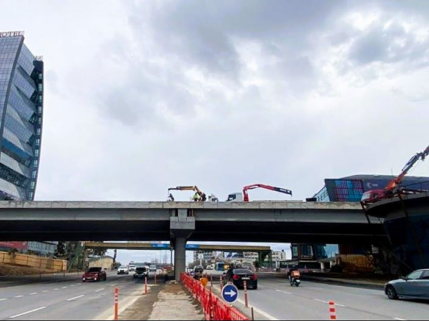
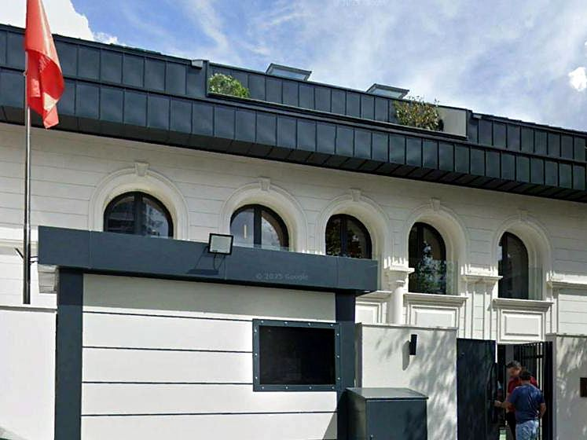
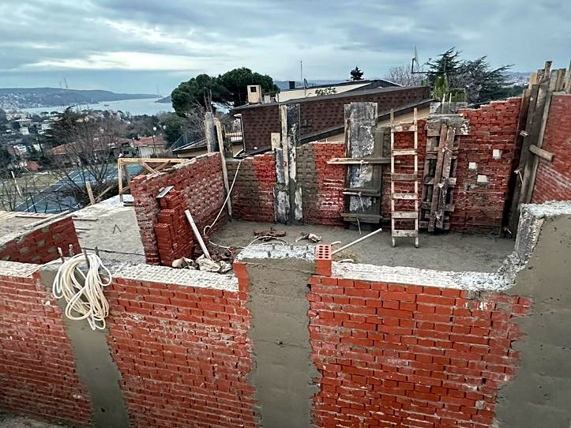
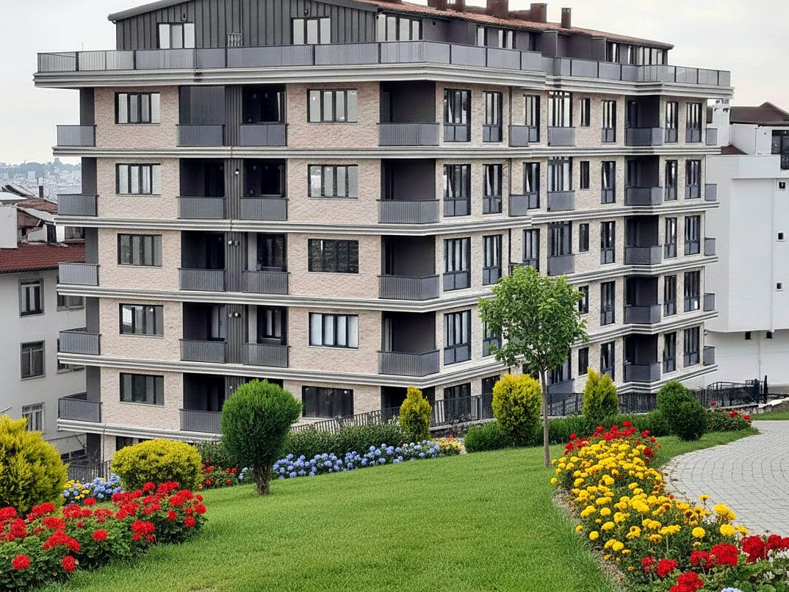
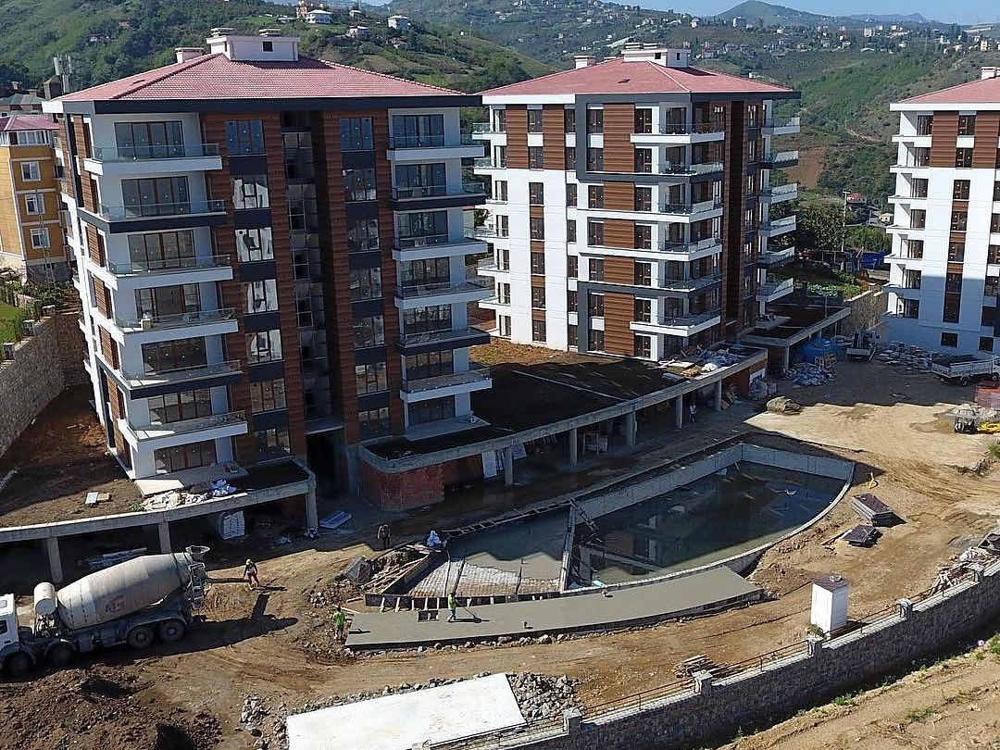

Altyapı
AltyapıGöztepe–Ümraniye–Ataşehir Metrosu
Gülermak – Nurol – Makyol
2023–2026
1993’ten bu yana konut, altyapı, güçlendirme ve müteahhitlik projelerinde yer aldık. Seçili projelerimizi aşağıda, arşivimizi sayfanın sonunda bulabilirsiniz.
AltyapıGülermak – Nurol – Makyol
2023–2026
 Altyapı
AltyapıRönesans Holding
2025–2026
 Altyapı
AltyapıÖzgün İnşaat
2025–2026

Makyol – Metgün – Kalyon
2024

Makyol – Metgün – Kalyon
2024

19.000 m²
2025

KRN Mimarlık
2025

1.000 m²
2023–2024

400 m²
2023–2024

110.000 m² inşaat alanı
2017–2020

8 katlı, 40 daire
2016–2018

Boztepe, Ortahisar ve Akçaabat
2013–2016
Fabrika, alışveriş merkezi ve kurumsal yapılarda kaba ve ince işlerle başlayan yolculuğumuzdan seçmeler.